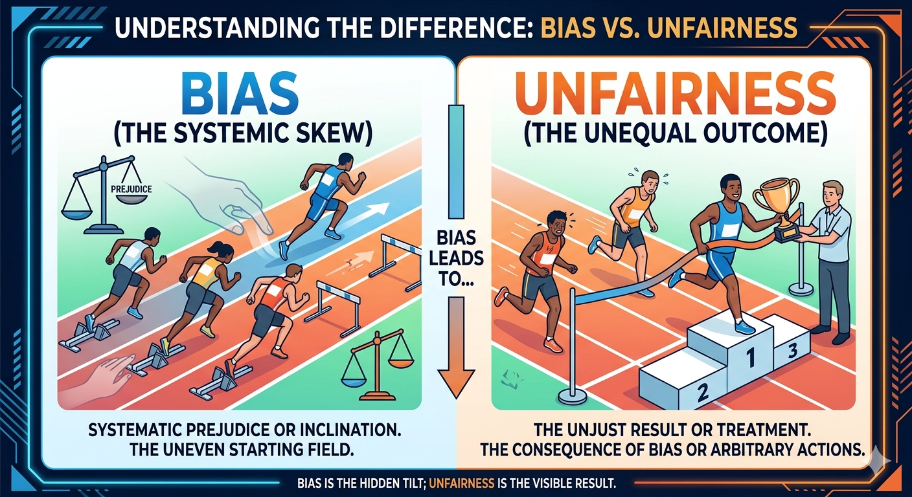

Intro of Bias
Bias represents systematic deviations in data or models. While technically necessary for learning, it becomes unfairness when producing discriminatory outcomes.Distinguishing "Bias" vs. "Unfairness"
Bias
a neutral, technical concept referring to systematic
deviations in a model’s outputs.
It comes from:
- uneven data distributions (statistical bias)
- model’s built-in inductive bias (necessary for learning and generalization)
- various training errors.
Bias is not inherently harmful; for example, inductive bias allows large language models to learn language patterns from limited text. Even capturing real-world group differences can be a form of bias without being problematic.
Unfairness
a normative value judgment. It arises when bias produces harmful, unjust outcomes—especially systematic disadvantage or discrimination against protected groups (e.g., based on gender, race, or religion)—violating ethical, legal, or societal standards of fairness. (Kodiyan, 2019).
 tendencies across gen 197962.png)
